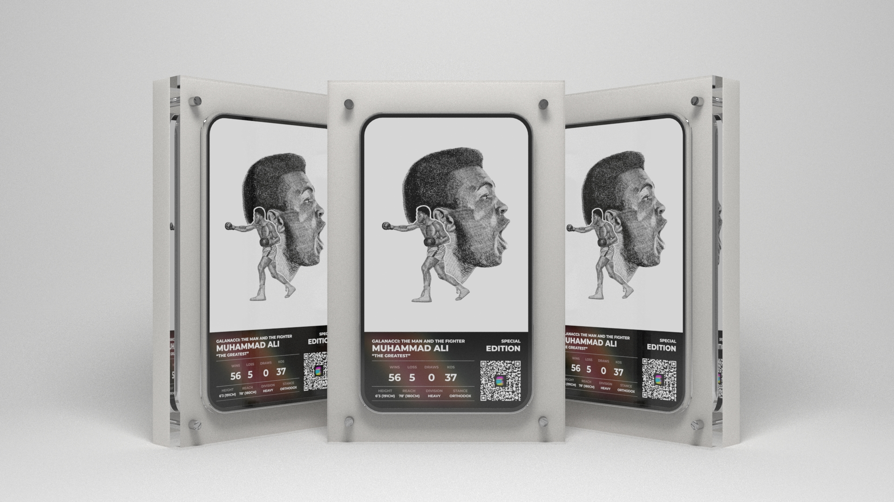

GALANACCI PRESENTS
G THE FIGHTER
CREATED
2021
CREATOR
GALANACCI
A DIGITAL ART COLLECTION EXPLORING BOXING'S GREATS.
LOADING DIGITAL FRAME 000%

3D VIEWER UNAVAILABLE ON THIS DEVICE
@GTHEFIGHTER
GTHEFIGHTER, 2021-2022.